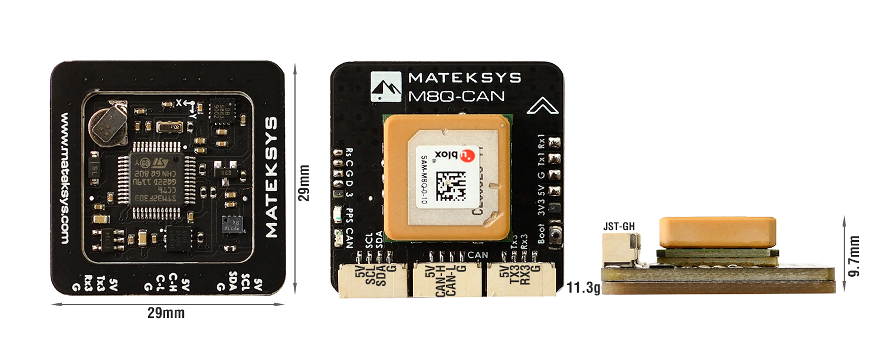
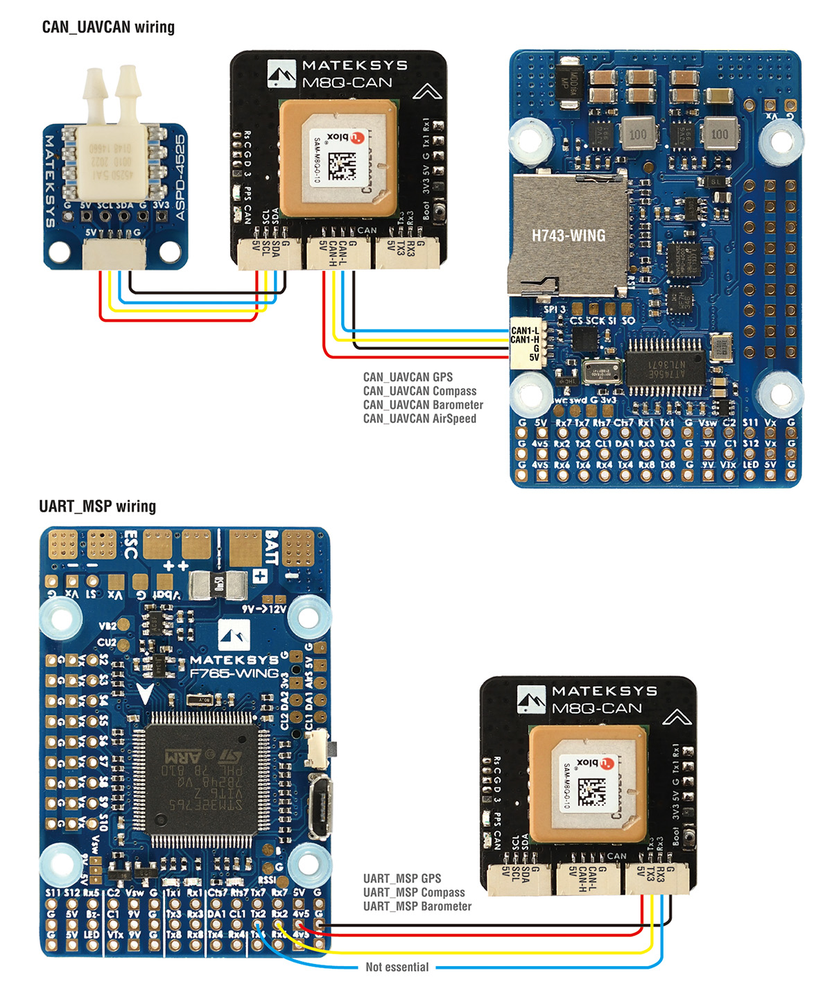

Matek M8Q DroneCAN/MSP GPS/MAG/BARO¶
Based on ArduPilots’ AP_Pheriph firmware, the Matek M8Q is a GPS+COMPASS+BAROMETER peripheral with CAN/DroneCAN and MSP interfaces to the autopilot, plus an I2C expansion bus for additional peripherals, such as airspeed sensors.
Features¶
- ArduPilot AP_Periph F303 CAN node integrating:
GPS SAM-M8Q (GPS, GLONASS, Galileo)
Magnetic Compass QMC5883L
Barometer DPS310
- CAN bootloader LED, Blue
Fast blinking, No communication between CAN node and Flight Controllers
Slow blinking, Communicating between CAN node and Flight Controllers
- GPS PPS LED, Green
Blinking(1Hz) when GPS has 3D fixed
Boot button
- Interfaces:
CAN,/DroneCAN Connection to autopilot
I2C JST-GH connector, external AirSpeed sensor
UART for alternate connection to autopilot via MSP
JST-GH connectors
- Specifications:
Input voltage range: 4~6V
Power consumption: 100mA
Operating Temperatures: -20~80 °C
Size: 29mm*29mm*9.7mm
Weight:11.3g
Wiring¶
Setup¶
DroneCAN¶
CAN_D1_PROTOCOL = 1
CAN_P1_DRIVER = 1
GPS_TYPE = 9 (DroneCAN)
COMPASS_TYPEMASK = 0 (or make sure DroneCAN bit is not checked)
if Airspeed sensor is connected to I2C port,
ARSPD_TYPE = 8 (DroneCAN)
ARSPD_USE = 1
The default airspeed sensor is expected to be a “DLVR-L10D” type , if not then you must use the SL-CAN interface to set and type in the internal firmware. In Mission Planner go to Setup > Optional Hardware > UAVCAN(DroneCAN) > SLCan Mode CAN1 > Parameters
if using an:
MS4525 set ARSPD_TYPE -> 1,
MS5525 set ARSPD_TYPE -> 5 (note: only an MS5525 with address 0x77 can be used to avoid conflict with DPS310 barometer.)
SDP3X set ARSPD_TYPE -> 6
DLVR-L10D set ARSPD_TYPE -> 9
the Write, and reboot
MSP¶
SERIALx_PROTOCOL= 32 (MSP) where x is the SERIAL port used for connection on autopilotGPS_TYPE = 19 (MSP)
BARO_PROBE_EXT = 4096 (MSP Baro)
BARO_PRIMARY = 1 (If you want to use MSP baro as primary baro, otherwise leave as default)
COMPASS_TYPEMASK = 0 (or make sure MSP bit is not checked)
MSP Firmware Update¶
Prior to September 2020, MSP connection was not supported. However, you may update to the new firmware by following the guide here.